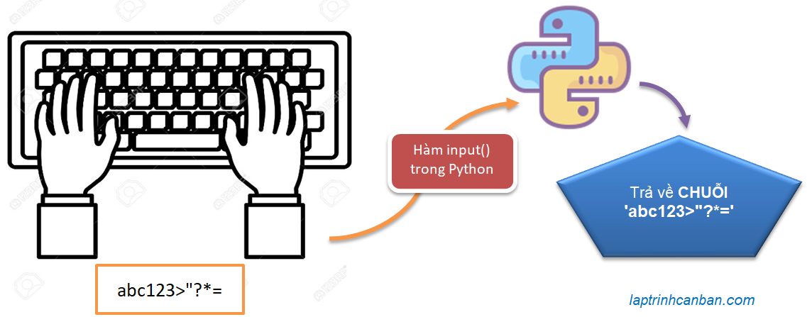
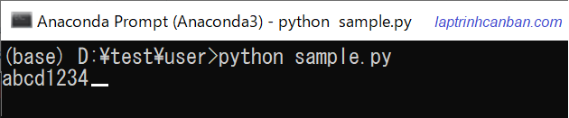
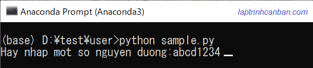
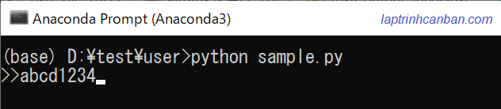

Phần đầu tiên trong chuyên đề nhập xuất trong Python, chúng ta sẽ cùng tìm hiểu về hàm input() và cách nhập dữ liệu vào python. Bạn sẽ học được các loại hàm nhập dữ liệu trong python trong các phiên bản Python2 và Python3 như hàm raw_input trong python, hàm input trong python, cũng như các cách sử dụng hàm input() để nhập dữ liệu vào Python sau bài học này.
Chúng ta có các loại hàm nhập dữ liệu trong python trong các phiên bản Python2 và Python3 như sau:
- Hàm raw_input() và hàm input() trong Python2
- Hàm input() trong Python3
Trong đó, chúng ta cần đặc biệt quan tâm tới hàm nhập dữ liệu trong Python3 là hàm input() trong Python.
Hàm nhập dữ liệu trong Python2 và Python3
Trong Python2, để nhập dữ liệu vào python chúng ta có thể sử dụng 2 hàm là raw_input() và input(). Tuy nhiên trong Python3 thì hàm nhập đã được làm lại, hàm input() cũ ở Python2 đã được bỏ đi và hàm raw_input() trong Python2 được đổi tên thành hàm input() trong Python3 với chức năng tương đương.
Hàm raw_input() trong Python2 và hàm input() trong Python3
Hàm raw_input() trong Python2 và hàm input() trong Python3 có chức năng giống nhau, đó là nhận dữ liệu nhập từ bàn phím vào Python dưới dạng kiểu chuỗi string(str).
Hàm input() trong Python2
Hàm input() trong Python2 có chức năng tương tự như hai hàm ở trên. Tuy nhiên trong hàm input ở Python2 còn có thêm chức năng đánh giá một chuỗi ký tự được nhập từ bàn phím.
Ví dụ nếu chúng ta sử dụng input() trong Python2 và nhập vào 1 + 2 thì python sẽ không nhận trực tiếp dữ liệu nhập vào là chuỗi '1 + 2' mà sẽ là giá trị phép cộng là 3.
Tuy nhiên do một số vấn đề xử lý nên chức năng này đã được bỏ đi trong hàm input() của Python3.
Sự khác biệt giữa input và raw_input trong Python
Nếu chỉ so sánh trong Python2, hai hàm trên sẽ khác nhau ở chỗ hàm input() trong Python2 sẽ được thêm chức năng đánh giá chuỗi nhập vào, trong khi đó hàm raw_input trong Python2 thì lại không.
Tuy nhiên nếu so sánh hai hàm này trong Python2 và Python3 thì bạn có thể thấy, chúng hoàn toàn giống nhau về chức năng.
Hàm input() trong Python
Do sự phổ biến của Python3, nên trong bài viết này cũng như các bài chia sẻ kiến thức cho các bạn tại chuyên đề Tự học python cho người mới bắt đầu, Kiyoshi mạn phép sẽ gọi và sử dụng hàm input() trong Python3 là Hàm input() trong Python và coi đây là hàm nhập dữ liệu mặc định. Chúng ta sẽ cùng tìm hiểu chi tiết về hàm này ở dưới đây.
Hàm input() trong Python là gì
Hàm input() trong Python là một hàm cài sẵn, có chức năng nhận dữ liệu nhập từ bàn phím vào Python và trả về kết quả dưới dạng kiểu chuỗi string(str).

Cú pháp và cách sử dụng hàm input() trong Python
Chúng ta sử dụng hàm input() trong Python với cú pháp sau đây:
input ( prompt )
Trong đó prompt là đối số duy nhất của hàm input(). Đây là một chuỗi ký tự bất kỳ có tác dụng hướng dẫn hoặc gợi ý về dữ liệu nhập vào. Bạn có thể tự do viết prompt hoặc có thể lược bỏ đi đối số này.
Ví dụ như các cách viết sau với hàm input() trong Python đều OK cả.
- Lược bỏ promtpMàn hình nhập dữ liệu:
input()

Thêm hướng dẫn, gợi ý về dữ liệu nhập vào thông qua promtp:
input("Hay nhap mot so nguyen duong:") |
Màn hình nhập dữ liệu:

Thêm ký tự thông báo chờ nhập liệu và làm đẹp phần nhập dữ liệu thông qua promtp:
input(">>") |
Màn hình nhập dữ liệu:

Nếu bạn chỉ định một chuỗi ký tự trong đối số promtp khi sử dụng hàm input(), chuỗi ký tự đó sẽ được hiển thị khi chờ nhập. Nếu bạn lược bỏ promtp, sẽ không có gì sẽ được hiển thị trên màn hình và bạn sẽ không biết liệu mình có đang chờ nhập liệu hay không. Do đó Kiyoshi khuyên bạn sẽ tốt hơn nếu bạn sử dụng hàm input() có kèm theo chỉ định đối số prompt trong hàm.
Hàm input() sẽ nhận dữ liệu nhập từ bàn phím và sau đó trả về kết quả là một chuỗi string(str) chứa dữ liệu được nhập. Chúng ta có thể gán kết quả này vào biến và sử dụng trong chương trình, ví dụ như in ra màn hình như sau:
dulieu = input("Hãy nhập dữ liệu:") |
Lưu ý là tất cả các loại dữ liệu nhập từ bàn phím vào Python bằng hàm input() đều được trả về kết quả là một chuỗi string(str). Do đó kể cả bạn có nhập số từ bàn phím vào Python chăng nữa thì số này cũng sẽ được nhận dưới dạng kiểu chuỗi mà thôi. Chúng ta có thể kiểm tra kiểu dữ liệu của kết quả nhận được bằng hàm type() như dưới đây:
dulieu = input("Hãy nhập dữ liệu:") |
Bạn có thể thấy số 123 nhập từ bàn phím đã được python nhận vào dưới dạng chuỗi (<class 'str'>) như trên.
Các cách nhập dữ liệu nâng cao bằng hàm input trong python
Ở phần trên chúng ta đã biết cách sử dụng hàm input() căn bản nhất để nhập dữ liệu trong Python rồi. Thực tế khi sử dụng hàm input() trong Python, bằng cách kết hợp với các hàm hoặc phương thức khác, chúng ta sẽ có vô vàn cách sử dụng input() khác nhau một cách đơn giản và thông mình hơn. Kiyoshi sẽ giới thiệu cho bạn một số phương pháp sử dụng nâng cao của hàm input() trong Python như dưới đây:
Nhập cùng lúc nhiều dữ liệu trên một dòng vào Python
Bằng cách kết hợp với phương thức tách chuỗi split() trong Python, chúng ta có thể nhập cùng lúc nhiều giá trị vào Python chỉ trên một dòng nhập dữ liệu.
Chúng ta sẽ nhập cùng lúc nhiều dữ liệu trên một dòng vào Python bằng cách nhập tất cả các dữ liệu đó cách nhau bởi dấu cách, sau đó tách các dữ liệu đó ra bằng split() và lưu kết quả dưới dạng list như sau:
s = input(">>").split() |
Màn hình nhập dữ liệu sẽ như sau:
>> 1 23 ab |
- Xem thêm: Tách chuỗi trong python.
Nhập nhiều dữ liệu trên nhiều dòng vào Python
Bằng cách sử dụng kết hợp với cách viết nội hàm list comprehension, chúng ta có thể sử dụng hàm input() để nhập nhiều dữ liệu trên nhiều dòng vào Python như sau:
s = [input(">>") for i in range(3)] |
Màn hình nhập dữ liệu sẽ như sau:
>> 1 |
Ứng dụng cách viết này, chúng ta có thể nhập n số nguyên từ bàn phím python như sau:
n = 5 |
Màn hình nhập dữ liệu sẽ như sau:
>> 1 |
- Xem thêm: Hàm range() trong Python.
- Xem thêm: Sử dụng list comprehension trong Python.
Chỉ định số lần nhập dữ liệu vào Python
Tương tự với cách ứng dụng cách viết nội hàm list comprehension, chúng ta có thể sử dụng hàm input() để chỉ định số lần nhập dữ liệu, trước khi tiến hành nhập số lần dữ liệu đó như sau:
n = int(input("n=")) |
Màn hình nhập dữ liệu sẽ như sau:
n=4 |
Ngoài ra, để nhập các kiểu dữ liệu khác nhau từ bàn phím vào python, ví dụ như nhập chuỗi trong python, nhập list trong python hay nhập số trong python chẳng hạn, chúng ta sẽ có các cách khác nhau phù hợp với từng kiểu dữ liệu đó. Hãy tham khảo chi tiết trong các bài viết dưới đây.
- Xem thêm: Nhập số trong python
- Xem thêm: Nhập chuỗi và list trong python
Tổng kết
Trên đây Kiyoshi cùng bạn tìm hiểu về hàm input() và cách nhập dữ liệu vào python rồi. Để nắm rõ nội dung bài học hơn, bạn hãy thực hành viết lại các ví dụ của ngày hôm nay nhé.
Và hãy cùng tìm hiểu những kiến thức sâu hơn về python trong các bài học tiếp theo.
HOME>> python cơ bản - lập trình python cho người mới bắt đầu>>04. nhập xuất trong python